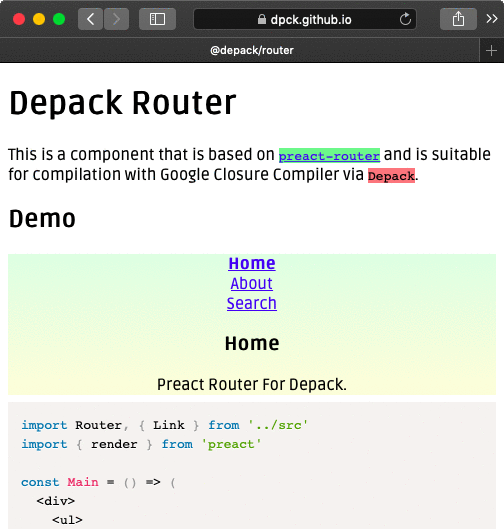

Zavr.co.uk 2019
This is a javascript.dev blog.7 February
Today I've started to fill up the depack scope with packages on NPM by transferring existing work into it. The first two packages are @depack/router and @depack/form that were taken from the knedv.ru website. The router is the adaptation of the preact-router that was modified to work with Depack. The reason it wasn't working was because some properties were assigned on string nodes which threw an error, and also because __preactattr_ was referenced without using quotes and got mangled by the Closure Compiler.// Original
import { render } from 'preact'
import Router from 'preact-router'
const Component = ({ title }) => {
return <div>{title}</div>
}
render(<Router>
<Component path="/" />
</Router>, document.body)
// Transpiled into
// ...
// ↓ the string that results in error
render(h(Router,{},`
`,h(Component,{path:"/"}),`
`), document.body)I also made the demo preview of the @depack/router using Splendid and had to update Splendid to insert files manually with the <File> tag for the purpose of adding the source map to the website JavaScript bundle made with Depack. It will also now show an error if a page does not exist, and produce better JSX code highlighting with Prism, since highlightjs does not work with JSX.

View the demo at https://dpck.github.io/router/
In addition, I integrated the @idio/frontend package into the Idio Core web server where it is possible to mount multiple frontend directories at once. There is an additional check to see if the pointed directory exists when starting the server. To sum up, the achievements of the day were moving most of the existing code into new packages, and integrating them into other tools (e.g., taking the router code out of knedv.ru website, putting it in a separate package and then installing that package into knedv.ru again). It is not always feasible to start making new packages straight away because when they need to be updated, the routine is more complicated when compared to the situation where the code is kept in the same package, but when the code has been somewhat manually tested, it can be made into separate software.
Finally, in the spirit of starting to breath life into existing scopes and domains rather than creating new ones, I decided to use my existing zavr.co.uk domain to blog about work to keep track of the things that I've done. I had already done so on the daily-log which was a GitHub blog compiled with Documentary, however I thought it would be a good use-case for Splendid to compile a blog website, so that new features could emerge.
Unfortunately, the depack GitHub organisation was taken since summer which is a bummer because it's when I first thought of Depack and I think I could have registered the org back then. The person has only registered to open a single issue, but nevermind I got the dpck org which is also acceptable and is cool in a way. It will specialise on publishing packages that can be safely compiled with Depack for front-end, since a lot of existing widgets and libraries will most likely require some adjustments to do that. The next package in the queue is @depack/from which is a bootstrap form that was quickly written by me earlier last week. It needs a better model where the root Form component would hold the values of all fields to be able to handle which components need re-rendering better. There are also tests to be written for front-end which is a new important chapter in Art Deco software development: Zoroaster will need to be modified to have a persistent context (to keep the browser open between tests), and strategies for communicating with browsers to run test suites will also need to be derived, since we're not going to use Karma and its adapters.
ToDo
- Setup the front-end testing infrastructure by allowing Zoroaster tests to have persistent context.
- Update the structure in Splendid to have components directory with the new AjaxMenu, don't override package.json if it exists, rework example pages.
- Come up with a web-interface where dependencies can be updated quickly, e.g., if I update @a-la/jsx, then @idio/frontend needs to be updated so that @idio/core can access the new feature or bugfix in the JSX. This is a requirement for Moderne, however can be implemented in MNPJS.org as well.